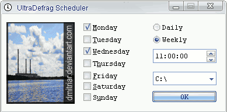

Scheduler
The command line version of UltraDefrag may be run out of system scheduled tasks. The process of adding a scheduled task instance of UltraDefrag is simplified throuth a utility called UltraDefrag Scheduler.

The simple gui has 4 settings:
Scheduler can be launched from Start menu. Use shortcut. To browse list of all scheduled tasks use the following menu: .